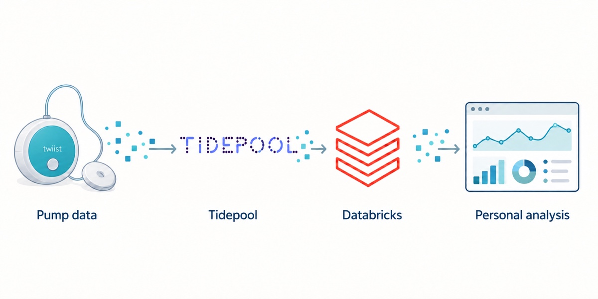

For people living with type 1 diabetes
Your pump data, understood privately.
Move your pump and CGM history from Tidepool into a workspace only you control, and see the patterns behind your days.

Tap a numbered step or an arrow to see what happens there.